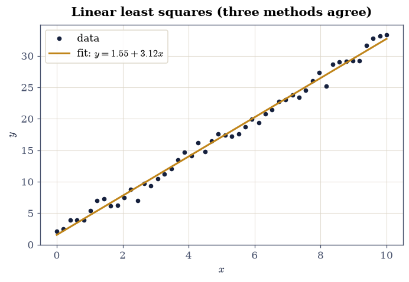
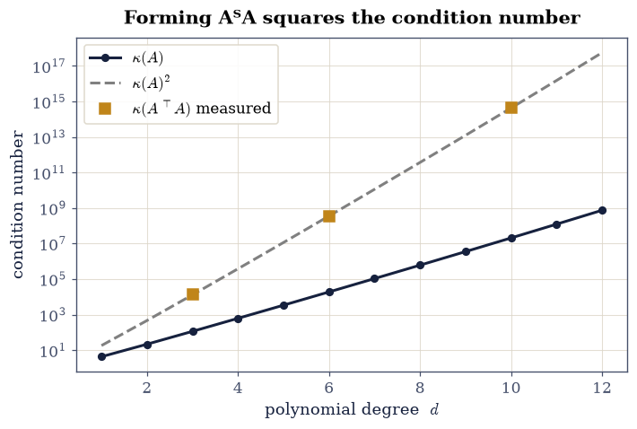
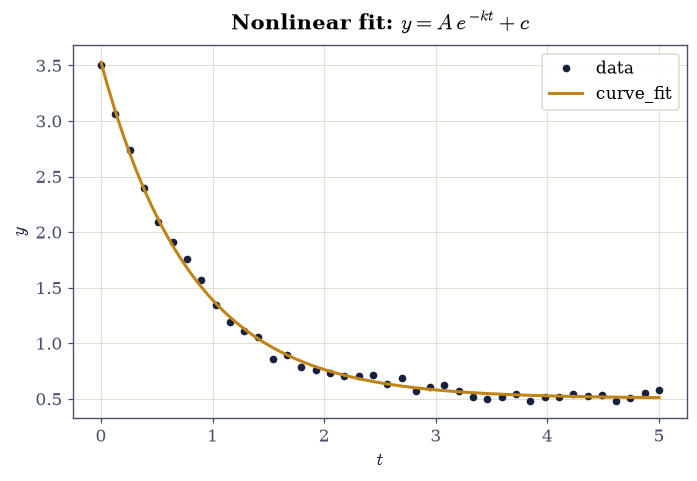
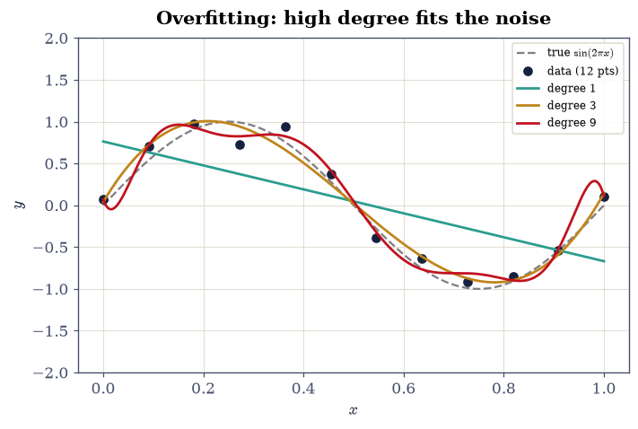

0.8 Fitting and Least Squares#
Notebook overview#
Every experiment ends the same way: a cloud of points, a model with a few free parameters, and the question what values make the model fit? The answer, almost always, is least squares. The quiet thesis of this notebook is that least squares is not a statistics topic bolted onto linear algebra but a linear-algebra problem wearing a lab coat. Fitting a line, fitting a polynomial, fitting any model linear in its parameters is exactly the projection of a data vector onto the column space of a design matrix, the same geometry we met in §0.4 and §0.5.
That viewpoint yields an immediate dividend. The formula every textbook prints, the
normal equations \(A^\top A\,\mathbf c = A^\top\mathbf y\), is mathematically
perfect and numerically treacherous: forming \(A^\top A\) squares the condition
number, so it throws away twice as many digits as the problem itself demands. This
is the conditioning lesson of §0.4 and
§0.5, now with consequences we can watch on
a real fit. The cure is also from those notebooks: solve through QR or the
SVD, never through \(A^\top A\), which is precisely what numpy.polyfit and
numpy.linalg.lstsq do under the hood.
From there we build the working toolkit a physicist actually needs: residuals and
the \(\chi^2\) statistic, the parameter covariance matrix and the error bars it
yields, nonlinear fitting when the model is not linear in its parameters
(scipy.optimize.curve_fit, an optimisation/root-finding problem that calls back
to §0.2 and §0.7), weighted least
squares for data with unequal uncertainties,
and the cautionary tale that never goes away: overfitting, where adding
parameters fits the training points beautifully while tracking the noise and
generalising worse. There are no animations here. A fit and its residuals are
static objects, and a static plot states the lesson more clearly than motion
would.
This notebook is the payoff of the two linear-algebra notebooks before it, and it feeds everything experimental downstream: extracting rates, exponents, lattice constants, and spectral peaks is this computation, run again and again.
How to read the checks. Each exercise ends with a
validatecall against an independent fact: three solution methods agreeing, a fitted parameter landing inside its error bar, a held-out error rising. A ✓ is strong evidence; a ✗ is a prompt to locate the discrepancy, not a verdict.
Theory in brief#
Least squares as projection#
Given data \((x_i, y_i)\) and a model linear in its parameters \(\mathbf c\), we assemble the design matrix \(A\) whose columns are the basis functions evaluated at the \(x_i\) (for a line, the columns are \(1\) and \(x_i\); for a degree-\(d\) polynomial, the powers \(x_i^0,\dots,x_i^d\)). The fit minimises the sum of squared residuals,
Geometrically, \(A\mathbf c\) ranges over the column space of \(A\), and the minimiser is the orthogonal projection of \(\mathbf y\) onto that subspace: the residual \(\mathbf y - A\mathbf c\) is perpendicular to every column of \(A\). That perpendicularity, written out, is the next equation.
The normal equations (correct, but dangerous)#
Setting the gradient of Eq. 56 to zero gives the normal equations
They are exact on paper and the fastest thing to code, which is why every textbook shows them. They are also the wrong way to compute a fit, for a reason that is pure §0.4/§0.5: forming \(A^\top A\) squares the condition number, \(\kappa(A^\top A) = \kappa(A)^2\). Since the achievable accuracy scales like \(\varepsilon\,\kappa\), squaring \(\kappa\) doubles the number of digits lost. A fit that is mildly ill-conditioned in \(A\) becomes catastrophically so in \(A^\top A\).
Solving through QR or the SVD#
The fix is to solve Eq. 56 without ever forming \(A^\top A\). Using the QR factorization \(A = QR\) of §0.4 (orthonormal \(Q\), upper-triangular \(R\)),
a single triangular solve whose accuracy depends on \(\kappa(A)\), not its square.
The SVD-based pseudoinverse \(A^+ = V\Sigma^+U^\top\) of
§0.5 does the same job
and is the most robust of all when \(A\) is nearly rank-deficient. These are exactly
what the library routines use: numpy.linalg.lstsq is SVD-based, and
numpy.polyfit builds on the same idea. Use them; do not hand-roll the normal
equations.
Goodness of fit, \(\chi^2\), and error bars#
A fit is not finished until we know how good it is and how uncertain the parameters are. The residuals \(r_i = y_i - (A\mathbf c)_i\) give the root-mean- square error \(\mathrm{RMSE} = \sqrt{\tfrac1n\sum r_i^2}\). When the data carry known uncertainties \(\sigma_i\), the right scalar is the chi-square statistic, and the parameter covariance follows from it:
for \(n\) data points and \(p\) parameters. The standard error of each parameter is the square root of the corresponding diagonal entry of the covariance. The covariance formula comes from propagating the data uncertainties through the linear solve; Press et al., Numerical Recipes, §15.4, carry the derivation out, and Bevington & Robinson [BR03] develop the statistics. (The \((A^\top A)^{-1}\) here is a small \(p\times p\) object used for uncertainty, not the route by which we solve the fit.)
Weighted least squares#
When points have different uncertainties \(\sigma_i\), they should not count equally. Weighting each residual by \(1/\sigma_i^2\) minimises
which is the maximum-likelihood fit for independent Gaussian errors (writing the Gaussian likelihood and taking its logarithm shows the equivalence; Bevington & Robinson [BR03] spell it out). Precise points pull harder; noisy points are allowed to miss.
Nonlinear least squares#
If the model is nonlinear in its parameters (a decay rate inside an exponential, a frequency inside a sine), the residual norm is no longer quadratic and there is no closed form. We minimise iteratively,
by Gauss–Newton or Levenberg–Marquardt: a sequence of linearised least-squares
steps, each one an instance of everything above, and each one a root-finding/
optimisation step in the spirit of §0.2 and
§0.7 (Press et al., Numerical Recipes, §15.5, develop
Levenberg–Marquardt in full). scipy.optimize.curve_fit
wraps this and returns the covariance for free.
Overfitting#
Finally, a warning that outlives every method. More parameters always reduce the residual on the data one fits, but past a point they fit the noise, not the signal, and the model generalises worse. The tell is the gap between the error on the training data and the error on held-out data: the first keeps falling, the second turns and climbs. This is the first taste of the bias–variance trade that runs through all of data analysis.
Setup#
Imports and print formatting only. NumPy and Matplotlib, the SciPy qr and
solve_triangular routines that Exercises 1 and 2 use to solve and to
project, scipy.optimize.curve_fit for the nonlinear fit, and
numpy.polynomial.Polynomial for the overfitting study. No fitting machinery
is pre-built here: every solve in this notebook, from the three-way linear fit
to the weighted synthesis, you write in the exercise that needs it.
The Setup below holds this notebook’s data and instruments — nothing you are asked to build. It is collapsed so the building stays yours; expand it whenever you want the details.
Exercise 1 — Linear least squares three ways#
A line is the simplest fit, and computing it three different
ways (the normal equations Eq. 57, a QR solve Eq. 58, and the
library lstsq) is the cleanest way to see that on a well-conditioned problem
they all agree. The disagreements come later, on the hard problems.
The explicit dataset is \(x = \) linspace(0, 10, 50) and \(y = 2 + 3x +
\varepsilon\) with \(\varepsilon = \) default_rng(0).normal(0, 1, 50); the model
is the line \(y = a + bx\), whose design matrix has columns \(1\) and \(x\)
(Eq. 56, built with numpy.vander).
Solve via the normal equations (
numpy.linalg.solveon \(A^\top A\)).Solve via QR (
scipy.linalg.qr+scipy.linalg.solve_triangular).Solve via
numpy.linalg.lstsq, and confirm all three coefficient vectors agree. Fig. 50 shows the data and the line.
normal equations : a = 1.548845, b = 3.116030
QR : a = 1.548845, b = 3.116030
lstsq : a = 1.548845, b = 3.116030
(true a, b) = (2, 3)

Fig. 50 Linear least-squares fit of \(y = a + bx\) to the 50-point dataset \(y = 2 + 3x + \varepsilon\), \(\varepsilon\sim\mathcal N(0,1)\) (seed 0): the data (dark points) and the fitted line (amber). On this well-conditioned problem the normal-equation, QR, and lstsq solutions are identical to machine precision, so a single line is drawn.#
Validation 1#
✓ the normal-equation and QR solutions agree on the well-conditioned fit [max|Δ| = 9.32587e-15 (rtol=1e-08, atol=1e-09)]
✓ the normal-equation and lstsq solutions agree on the well-conditioned fit [max|Δ| = 1.28786e-14 (rtol=1e-08, atol=1e-09)]
True
Exercise 2 — The design matrix and the projection picture#
Least squares is a projection (Eq. 56), and this
exercise makes the geometry literal. For a polynomial fit the design matrix is the
Vandermonde matrix, columns \(x^0, x^1, \dots, x^d\); the fitted values
\(A\mathbf c\) are the projection of \(\mathbf y\) onto the column space of \(A\). We can
compute that projection two independent ways and check they coincide: the fit
\(A\mathbf c\) from lstsq, and the explicit orthogonal projector \(Q Q^\top\mathbf
y\) built from the QR factors.
For the explicit dataset \(x = \) linspace(-2, 2, 40),
\(y = 1 + 0.5x - 0.3x^2 + 0.2x^3 + \varepsilon\) with \(\varepsilon = \)
default_rng(2).normal(0, 0.4, 40):
Build the degree-3 Vandermonde design matrix (
numpy.vander) and fit it withnumpy.linalg.lstsq.Confirm the vector of fitted values equals the projection of \(\mathbf y\) onto \(\operatorname{col}(A)\), computed independently as \(Q Q^\top\mathbf y\) from the
scipy.linalg.qrfactors.
fitted coefficients (1, 0.5, -0.3, 0.2 true) = [ 1.0239 0.4873 -0.316 0.2062]
max |A c − Q Qᵀ y| = 2.66e-15
Validation 2#
✓ the least-squares fit is the orthogonal projection of y onto the column space of A [max|Δ| = 2.66454e-15 (rtol=1e-08, atol=1e-09)]
True
Exercise 3 — Why not the normal equations: squaring the condition number#
This is the centrepiece, and it is the conditioning lesson of §0.4 and §0.5 applied directly to fitting. Forming \(A^\top A\) squares the condition number, \(\kappa(A^\top A) = \kappa(A)^2\), so the normal equations operate on a matrix that is twice as ill-conditioned (in digits) as the design matrix itself. Monomial Vandermonde matrices make this vivid: they grow ill-conditioned quickly with degree.
For Vandermonde design matrices of degree \(d = 3, 6, 10\) on \(x = \)
linspace(0, 1, 30), compute \(\kappa(A)\) and \(\kappa(A^\top A)\) (numpy.linalg.cond).Confirm the second is the square of the first (equivalently, \(\log_{10}\kappa(A^\top A) = 2\log_{10}\kappa(A)\)). Fig. 51 plots both against degree.
degree 3: κ(A) = 1.139e+02, κ(AᵀA) = 1.297e+04, κ(A)² = 1.297e+04
degree 6: κ(A) = 1.887e+04, κ(AᵀA) = 3.562e+08, κ(A)² = 3.562e+08
degree 10: κ(A) = 2.067e+07, κ(AᵀA) = 4.265e+14, κ(A)² = 4.273e+14

Fig. 51 Condition numbers of the monomial Vandermonde design matrix on \(x=\) linspace(0,1,30) versus polynomial degree, on a log \(y\)-axis: \(\kappa(A)\) (dark) and \(\kappa(A^\top A)\) (amber). The normal-equations matrix \(A^\top A\) tracks \(\kappa(A)^2\) (grey dashed), so by degree 10 it is roughly the square of an already-large number: the reason the normal equations lose twice as many digits as a QR or SVD solve.#
Validation 3#
✓ forming AᵀA squares the condition number (log₁₀κ(AᵀA) = 2 log₁₀κ(A)) [max|Δ| = 0.000854859 (rtol=1e-06, atol=0.5)]
True
Exercise 4 — Accuracy loss in practice#
The squared condition number is not academic: it destroys real coefficients. Here we set up a fit with a known answer and watch the normal equations get it wrong while the SVD-based solver gets it right. The only difference between the two is whether \(A^\top A\) is ever formed.
Build the degree-10 Vandermonde \(V\) on \(x = \)
linspace(0, 1, 30), choose true coefficients \(\mathbf c_{\rm true} = \)default_rng(0).normal(size=11), and form the exact \(\mathbf y = V\mathbf c_{\rm true}\) (no noise — the only error will be numerical).Recover \(\mathbf c\) two ways: the normal equations \(V^\top V\mathbf c = V^\top\mathbf y\) and the SVD-based
numpy.linalg.lstsq.Compare the recovery errors against \(\mathbf c_{\rm true}\): the SVD solve should be dramatically more accurate.
recovery error, normal equations = 4.80e-03
recovery error, SVD (lstsq) = 4.04e-11
the SVD solve is 118808836× more accurate here
Validation 4#
✓ the SVD-based solve recovers the coefficients far more accurately than the normal equations [normal 4.80e-03 vs SVD 4.04e-11]
True
Exercise 5 — Goodness of fit, χ², and error bars#
A fitted number without an uncertainty is half an answer. From the residuals of a fit we get the RMSE, and from the covariance Eq. 59 we get a standard error on every parameter: the \(\pm\) that belongs on every reported slope and intercept.
For the linear fit of Exercise 1 (the same \(x\), \(y\), and design matrix):
Compute the residuals and the RMSE.
Form the parameter covariance \(\hat\sigma^2 (A^\top A)^{-1}\) with \(\hat\sigma^2 = \lVert\mathbf r\rVert^2/(n-p)\) (Eq. 59; the small \(p\times p\) inverse via
numpy.linalg.invis legitimate here — it is used for uncertainty, not to solve the fit).Report the slope and intercept with their standard errors, and confirm the true values \((a, b) = (2, 3)\) lie within a few standard errors of the fit.
RMSE of residuals = 0.8446
intercept a = 1.5488 ± 0.2402 (true 2)
slope b = 3.1160 ± 0.0414 (true 3)
true values lie 1.88σ (a) and 2.80σ (b) from the fit
Validation 5#
✓ the true parameters lie within three standard errors of the fit [deviations 1.88σ (a), 2.80σ (b)]
True
Exercise 6 — Nonlinear least squares#
When a parameter sits inside a nonlinear function
(a rate inside an exponential), there is no design matrix and no closed form
(Eq. 61). scipy.optimize.curve_fit minimises the residual norm
iteratively with Levenberg–Marquardt: each step linearises the model and solves a
least-squares problem, so it is built from everything above, and it is a
root-finding/optimisation iteration in the spirit of §0.2
and §0.7. It returns the
parameter covariance too, so the error bars come for free.
Fit the model \(y = A\,e^{-kt} + c\) to the explicit dataset \(t = \)
linspace(0, 5, 40), with true \((A, k, c) = (3, 1.2, 0.5)\) and noisedefault_rng(0).normal(0, 0.05, 40), usingscipy.optimize.curve_fit.Report the standard errors from the returned covariance.
Confirm the recovery is accurate. Fig. 52 shows the data and the fitted curve.
A = 3.0233 ± 0.0275 (true 3.0)
k = 1.2287 ± 0.0227 (true 1.2)
c = 0.5042 ± 0.0102 (true 0.5)

Fig. 52 Nonlinear least-squares fit of \(y = A\,e^{-kt} + c\) to the 40-point dataset with true \((A,k,c)=(3,1.2,0.5)\) and Gaussian noise \(\sigma=0.05\) (seed 0): the data (dark points) and the curve_fit result (amber). Levenberg–Marquardt recovers the parameters to within a few percent, each with a standard error from the returned covariance.#
Validation 6#
✓ nonlinear least squares recovers the exponential parameters (A, k, c) [max|Δ| = 0.0286912 (rtol=0.1, atol=1e-09)]
True
With your assistant
Ask your assistant to generate a curve_fit call for the exponential data of
Exercise 6 and run what it produces. Then apply the discipline of
§0.10 to whatever came back: the rms
residual held against the noise scale, and a handful of restarted p0 draws —
because a success flag tests convergence, not truth. The check is yours.
Exercise 7 — Overfitting (student exercise)#
Here is the lesson that never goes away, and it is yours to build. More parameters always fit the training points better, but past a point they fit the noise and generalise worse. The diagnostic is to measure error on two sets: the data we fit, and a held-out reference we did not. As the polynomial degree climbs, the training error falls monotonically while the error against the true curve turns and rises.
The explicit data are 12 points \(x = \) linspace(0, 1, 12), \(y = \sin(2\pi x) +
\varepsilon\) with \(\varepsilon = \) default_rng(1).normal(0, 0.2, 12), plus a
held-out test set on a dense grid linspace(0, 1, 400) compared against the
true \(\sin(2\pi x)\).
Fit polynomials of degree 1, 3, and 9 with
numpy.polynomial.Polynomial.fit(least squares on a rescaled domain, the stable variant).Compute both the training RMSE (against the noisy data) and the test RMSE (against the true curve).
Show the degree-9 fit drives the training error down while the test error rises: it is fitting the noise. Fig. 53 shows all three fits with the true curve, and the degree-9 wiggle should be unmistakable.
Because the check tests the errors (test RMSE rising with degree), a ✗ means “re-examine the fits or the RMSE computation,” never a problem with the plot.
degree 1: training RMSE = 0.4979, test RMSE = 0.4670
degree 3: training RMSE = 0.1220, test RMSE = 0.0956
degree 9: training RMSE = 0.0705, test RMSE = 0.1430

Fig. 53 Polynomial fits of degree 1, 3, and 9 to 12 noisy samples of \(\sin(2\pi x)\) (Gaussian noise \(\sigma=0.2\), seed 1): the data (dark points), the true curve (grey dashed), and the three fits. Degree 1 underfits; degree 3 captures the signal; degree 9 chases the 12 noisy points and wiggles wildly between them, driving its training error down while its error against the true curve climbs: the signature of overfitting.#
Validation 7#
✓ the highest-degree polynomial generalises worse: it overfits the noise [test RMSE: degree 9 = 0.143 > degree 3 = 0.096]
True
Exercise 8 — Weighted least squares (synthesis)#
A closing synthesis: when points carry unequal uncertainties, an unweighted fit lets the noisy points shout as loudly as the precise ones. Weighting by \(1/\sigma_i^2\) (Eq. 60) is the principled, maximum-likelihood choice, and in practice it recovers the truth more reliably.
The explicit data are heteroscedastic points on the line \(2 + 3x\) for
\(x = \) linspace(0, 10, 50), with per-point uncertainties \(\sigma = \)
linspace(0.5, 2, 50) and noise drawn at those \(\sigma\)
(default_rng(3).normal(0, σ)).
Fit the line unweighted (
numpy.linalg.lstsq).Fit it weighted, with \(W = \operatorname{diag}(1/\sigma^2)\) implemented as a least-squares solve on the row-scaled system (each row of \(A\) and \(y\) multiplied by \(1/\sigma_i\)).
Confirm the weighted fit recovers the true parameters \((2, 3)\).
unweighted: a = 1.8595, b = 3.0432
weighted : a = 1.8662, b = 3.0419 (true 2, 3)
Validation 8#
✓ the weighted fit recovers the true parameters (a, b) = (2, 3) [max|Δ| = 0.133782 (rtol=0.3, atol=1e-09)]
True
Notebook summary#
Linear least squares three ways (normal equations, QR, SVD) and the design-matrix projection picture; why the normal equations square the condition number, and the accuracy loss that follows.
Goodness of fit with \(\chi^2\) and error bars; nonlinear least squares (
scipy.optimize.curve_fit); overfitting; and weighted least squares.
Outlook#
Regularisation (ridge / Tikhonov). When a fit is ill-posed, adding a penalty \(\lambda\lVert\mathbf c\rVert^2\) stabilises it, and connects directly to the truncated-SVD low-rank idea of §0.5.
Total least squares. When there is error in \(x\) as well as \(y\), ordinary least squares is biased; orthogonal-distance regression fits the perpendicular residuals instead.
Better bases. The monomial Vandermonde of Exercise 3 is badly conditioned, and there are two distinct cures. Orthogonal polynomials fix it outright (
numpy.polynomial.Chebyshev.fit), whilenumpy.polynomial.Polynomial.fitsoftens it a different way, rescaling the data window to \([-1, 1]\) in the monomial basis.What the error bars mean. Bayesian curve fitting reinterprets the covariance as a posterior: a forward link to the statistical-mechanics volume.
Everywhere downstream. Fitting extracts rates, exponents, lattice constants, and spectroscopic peaks; this notebook is the machine under all of it.
References#
Philip R. Bevington and D. Keith Robinson. Data Reduction and Error Analysis for the Physical Sciences. McGraw-Hill, 3 edition, 2003.
William H. Press, Saul A. Teukolsky, William T. Vetterling, and Brian P. Flannery. Numerical Recipes: The Art of Scientific Computing. Cambridge University Press, 3 edition, 2007.
Lloyd N. Trefethen and David Bau. Numerical Linear Algebra. Society for Industrial and Applied Mathematics (SIAM), 1997.